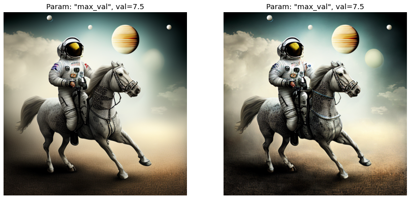
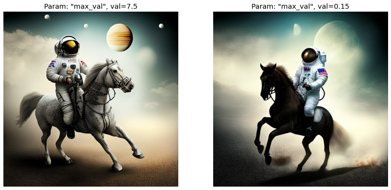
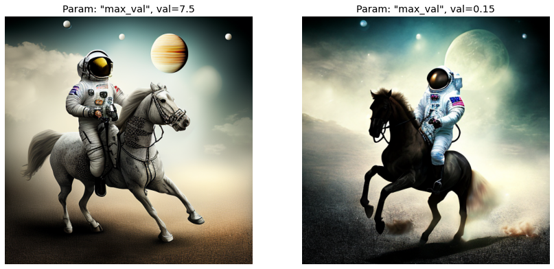

Experiments with normalizations for Classifier-free Guidance.
Introduction
This notebook is Part 2 in a series on dynamic Classifier-free Guidance.
Quick recap of Part 1
In Part 1, we generated a baseline image using the default, static Classifier-free Guidance. To see if we could improve on the baseline, we swept a range of Cosine Schedules on the guidance parameter \(G\).
To recap the results of the sweep, there are a few promising guidance schedules to explore:
Setting a higher guidance value.
Allowing the Cosine schedule to go through multiple cycles.
Warming up the guidance for a few steps.
Part 2: Bringing in Normalizations
In Part 2, we bring in normalizations as another kind of dynamic guidance.
The idea is that normalizing the guidance might improve the updates in the Diffusion model’s latent image space. To test this we explore three kinds of guidance normalizations:
Normalizing the prediction by its overall norm.
Normalizing the guidance update vector, \(\left(t - u\right)\), by its norm.
Combining the Normalizations in 1. and 2.
Note
More details about the normalizations can be found in this section of the original post.
After these runs, we should have a good idea of both the schedules and normalizations that can improve Diffusion images. We will then combine the two approaches and explore other, more advanced schedules.
Leveraging a few helper libraries
We use two new libraries that make it easier to run dynamic Classifier-free Guidances.
These two libraries are:
min_diffusion
cf_guidance
The helper libraries remove a lot of overhead and boilerplate code. They allow us to jump straight to the important parts: running the guidance experiments.
For more details, the libraries were introduced in this earlier post.
Experiment Setup
Python Imports
To start we import the needed python modules.
We also handle random seeding to make sure that our results are reproducible across the series.
import osimport mathimport randomimport warningsfrom PIL import Imagefrom typing import Listfrom pathlib import Pathfrom types import SimpleNamespacefrom fastcore.allimport Limport numpy as npimport matplotlib.pyplot as plt# imports for diffusion modelsimport torchfrom transformers import logging# for clean outputswarnings.filterwarnings("ignore")logging.set_verbosity_error()# seed for reproducibilitySEED =1024def seed_everything(seed: int): random.seed(seed) os.environ['PYTHONHASHSEED'] =str(seed) np.random.seed(seed) generator = torch.manual_seed(seed) torch.backends.cudnn.deterministic =True torch.backends.cudnn.benchmark =Falsereturn generator# for sampling the initial, noisy latentsgenerator = seed_everything(SEED)# set the hardware devicedevice ="cuda"if torch.cuda.is_available() else"mps"if torch.has_mps else"cpu"
2022-11-23 14:58:50.779076: I tensorflow/stream_executor/platform/default/dso_loader.cc:53] Successfully opened dynamic library libcudart.so.11.0
The min_diffusion library
We use the min_diffusion library to load a Stable Diffusion model from the HuggingFace hub.
# to load Stable Diffusion pipelinesfrom min_diffusion.core import MinimalDiffusion# helpers to plot the generated imagesfrom min_diffusion.utils import show_image, image_grid
Loading the openjourney model from Prompt Hero
The following code loads the openjourney model in torch.float16 precision and puts it on the GPU.
We use the familiar, running prompt in our series to generate an image:
“a photograph of an astronaut riding a horse”
Important
The openjourney model was fine-tuned to create images in the style of Midjourney v4.
To enable this fine-tuned style, we need to add the keyword "mdjrny-v4" at the start of the prompt.
# text prompt for image generationsprompt ="mdjrny-v4 style a photograph of an astronaut riding a horse"
Image parameters
The images will be generated over \(50\) diffusion steps. They will have a height and width of 512 x 512 pixels.
# the number of diffusion stepsnum_steps =50# generated image dimensionswidth, height =512, 512
The Baseline: Guidance with a constant \(G =7.5\)
First we create the baseline. Then we will check how a normalized, dynamic guidance changes the output.
The baseline Classifier-free Guidance uses a static, constant update of \(G = 7.5\).
from cf_guidance.transforms import GuidanceTfm, BaseNormGuidance, TNormGuidance, FullNormGuidance
# create the baseline Classifier-free Guidancebaseline_run = {'max_val': [7.5]}# parameters we are sweepingbaselines_names =sorted(list(baseline_run))baseline_scheds = L()# step through each parameterfor idx,name inenumerate(baselines_names):# step through each of its valuesfor idj,val inenumerate(baseline_run[name]):# create the baseline experimeent expt = {'param_name': name,'val': val,'schedule': [val for _ inrange(num_steps)] }# for plotting expt['title'] =f'Param: "{name}", val={val}'# add to the running list of experiments baseline_scheds.append(expt)
Wrapper to run the experiments
The run function below generates images from a given prompt.
It also takes an argument guide_tfm for the specific Guidance Transformation class that will guide the outputs. The schedules argument has the parameter values of \(G\) at each diffusion timestep.
def run(prompt, schedules, guide_tfm=None, generator=None, show_each=False, test_run=False):"""Runs a dynamic Classifier-free Guidance experiment. Generates an image for the text `prompt` given all the values in `schedules`. Uses a Guidance Transformation class from the `cf_guidance` library. Stores the output images with a matching title for plotting. Optionally shows each image as its generated. If `test_run` is true, it runs a single schedule for testing. """# store generated images and their title (the experiment name) images, titles = [], []# make sure we have a valid guidance transformassert guide_tfmprint(f'Using Guidance Transform: {guide_tfm}')# optionally run a single test scheduleif test_run:print(f'Running a single schedule for testing.') schedules = schedules[:1]# run all schedule experimentsfor i,s inenumerate(schedules):# parse out the title for the current run cur_title = s['title'] titles.append(cur_title)# create the guidance transformation cur_sched = s['schedule'] gtfm = guide_tfm({'g': cur_sched})print(f'Running experiment [{i+1} of {len(schedules)}]: {cur_title}...') img = pipeline.generate(prompt, gtfm, generator=generator) images.append(img)# optionally plot the imageif show_each: show_image(img, scale=1)print('Done.')return {'images': images,'titles': titles,}
Let’s create the baseline image. The hope is that our guidance changes will then improve on it.
Using Guidance Transform: <class 'cf_guidance.transforms.GuidanceTfm'>
Running experiment [1 of 1]: Param: "max_val", val=7.5...
Done.
# view the baseline imagebaseline_res['images'][0]
Not a bad starting point. Let’s see if we can do better.
Improving the baseline with normalizations
It seems that normalizations can improve both the syntax and details of Diffusion images.
We explore three kinds of normalizations:
Prediction Normalization
T-Normalization
Full Normalization
Details on normalized Guidance values
For Prediction Normalization we can use the same static \(G = 7.5\) from the baseline.
For both T-Normalization and Full Normalization, however, we need a much smaller guidance value. The reason is that these normalizations scale the update vector \(\left( t - u \right)\) itself. That means that a large value like \(G = 7.5\) would de-scale the vectors even more! That is the exact situation we are trying to avoid with normalization in the first place.
To prevent this, we create a special \(G_\text{small}\) schedule for T and Full Normalizations with a smaller value of \(G_\text{small} = 0.15\)
# create the baseline Classifier-free GuidanceT_run = {'max_val': [0.15]}# parameters we are sweepingT_scheds = L()# step through each parameterfor idx,name inenumerate(baselines_names):# step through each of its valuesfor idj,val inenumerate(T_run[name]):# create the baseline experimeent expt = {'param_name': name,'val': val,'schedule': [val for _ inrange(num_steps)] }# for plotting expt['title'] =f'Param: "{name}", val={val}'# add to the running list of experiments T_scheds.append(expt)
Prediction Norm runs
print('Running the BaseNorm experiments...')base_norm_res = run(prompt, baseline_scheds, guide_tfm=BaseNormGuidance, generator=generator)
Running the BaseNorm experiments...
Using Guidance Transform: <class 'cf_guidance.transforms.BaseNormGuidance'>
Running experiment [1 of 1]: Param: "max_val", val=7.5...
Done.
T-Norm runs
print('Running the T-Norm experiments...')t_norm_res = run(prompt, T_scheds, guide_tfm=TNormGuidance, generator=generator)
Running the T-Norm experiments...
Using Guidance Transform: <class 'cf_guidance.transforms.TNormGuidance'>
Running experiment [1 of 1]: Param: "max_val", val=0.15...
Done.
Full Norm runs
print('Running the FullNorm experiments...')full_norm_res = run(prompt, T_scheds, guide_tfm=FullNormGuidance, generator=generator)
Running the FullNorm experiments...
Using Guidance Transform: <class 'cf_guidance.transforms.FullNormGuidance'>
Running experiment [1 of 1]: Param: "max_val", val=0.15...
Done.
Results
Let’s compare each result to the baseline.
The baseline image is on the left, and the normalized version is on the right.
Prediction Norm results

Comparing left to right, Prediction Normalization improves the overall image.
The horse’s body and hair are more defined. The clouds in the background have more texture. The lowest orb in the sky is much better defined. The shadows on the ground also have better coverage and a more natural transition. The ground itself has more details and texture, and is better separated from the background sky.
Even the reflection on the astronaut’s helmet has more depth and looks smoother.
Overall, it seems that Prediction Normalization is a global improvement on the baseline.
T-Norm results

This one is much more interesting. T-Normalization completely changed the image! Even though they started from the exact same noisy latents.
Here the horse’s anatomy, especially its head, look more correct. Even though we lost overall illumination on the horse’s body.
The patches and details on the astronaut’s gear are also better defined. And maybe it’s subjective, but this one feels more like a photograph (thanks to helmet’s glare) while the baseline looks more like digital art.
Full Norm results

Full Normalization feels like a mix of the best from both worlds.
The horse’s anatomy and astronaut details are better, following the results from T-Normalization. And we regained some background vs. foreground separation from Prediction Normalization.
It seems this dual benefit came at the cost of some symmetry for the orbs in the sky, and a loss of resolution on the horse’s tail.
Analysis
Overall, at least for this example, it is fair to say that normalizations can improve Diffusion images.
Either the baseline image was improved overall (Prediction Normalization), or we gained better image syntax and details (T-Normalization and Full Normalization).
Given that T-Normalization and Full Normalization completely changed the style of the baseline image, there is a lot to explore here. To start, there is likely a much better set of \(G_\text{small}\) values. Consider the baseline’s value of \(G = 7.5\). This value is the standard across many Diffusion models and empirically produces good results. Meanwhile, our \(G_\text{small} = 0.15\) is only a starting point that has not been thoroughly tested.
In summary, it seems that Prediction Normalization could be an easy way to improve all Diffusion images. As for the others, they definitely have potential that should be explored further.
Conclusion
This notebook was Part 2 in a series on dynamic Classifier-free Guidance.
We showed that normalizing the guidance has a big impact on the generated images. We found that Prediction Normalization has the potential to improve any Diffusion image.
Now, after Parts 1 and 2, we have a good idea of the guidance schedules and normalizations that might improve generated images.
In Part 3, we will combine schedules with normalizations to see if their gains compound.